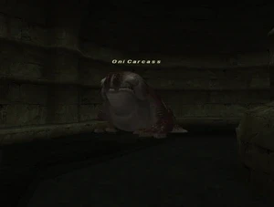

Level 75 reference · Zenith rules
|
Job: Warrior Notorious Monster |
 |

|
Zone |
Level |
Drops |
Steal |
Spawns |
Notes | ||||||
|
68-70 |
1 |
| |||||||||
|
HP = Detects Low HP; M = Detects Magic; Sc = Follows by Scent; T(S) = True-sight; T(H) = True-hearing JA = Detects job abilities; WS = Detects weaponskills; Z(D) = Asleep in Daytime; Z(N) = Asleep at Nighttime | |||||||||||
Notes:
- Spawns around H-11 on the map with the entrance from Windurst Walls, approximately every 21-24 hours.
- Killable by: 12 characters level 60; Soloable by most lvl75 jobs.
- Soloable by level 70 BST/WHM using the closest Mousses as pets (used Apollo's Staff) with caution.
- Special Attacks: Mighty Strikes
- Has about 25,000 HP.
Video
See Video.
Adapted from Eden Wiki: Oni Carcass · Contributors and history · CC BY-SA 4.0. Revision 44125. Layout, links and optional background text adapted for Zenith.